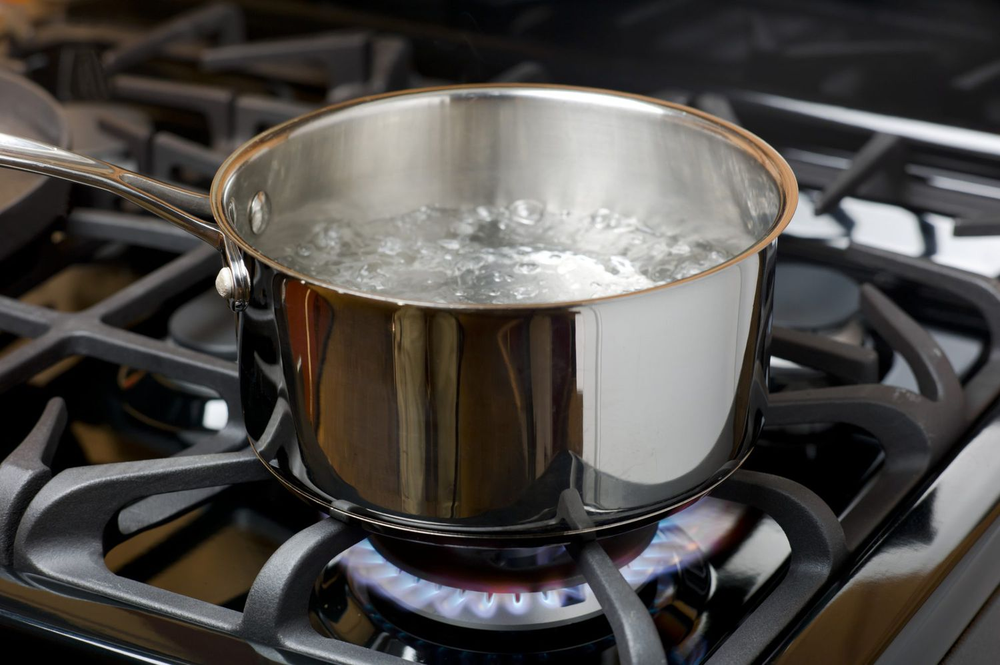
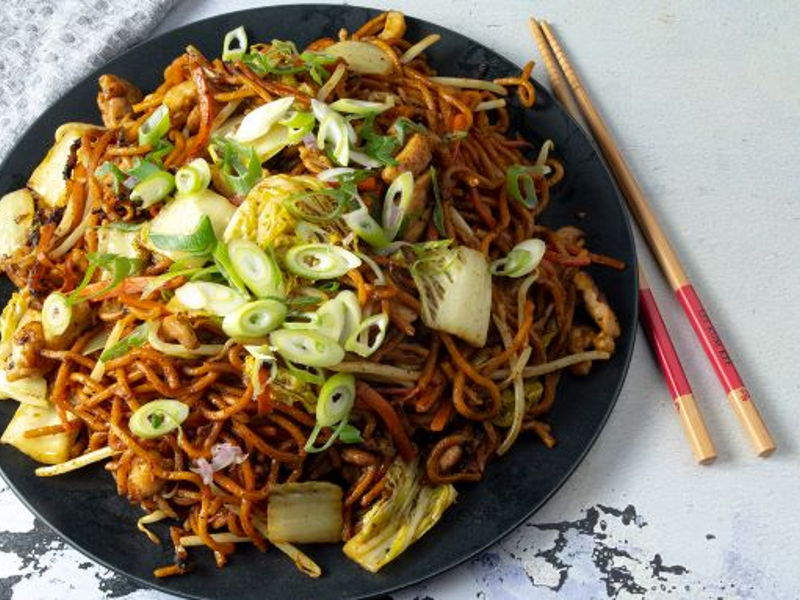

Noodles
This classic noodle recipe is made with an easy meat sauce as the base.
Layer the sauce with noodles and cheese, then bake until bubbly! This is
great for feeding a big family and freezes well, too.

What you will need:
- a will to live
- 100gr noodles
- some water
- a kettle
- hunger
- a bowl
Instructions:
-
Boil water
To achieve maximum temperate make sure your kettle is positioned in
the centre of the earth
-
Pour water into bowl
There is a fine art to everything. No really, there is, like making
ice cubes for instance. It's essential that you only use water and
remember to shut the freezer door; the first step is imperative as
frozen soda or tomato juice isn't very palatable when melting in your
glass of H2O. Just an FYI.
-

Add noodles and soup base
In a large saucepan, heat the chicken stock and bring to a boil. Add
the green onions, Bok Choy or Chinese greens, soy sauces, oyster sauce
& the noodles.
-
Enjoy!
